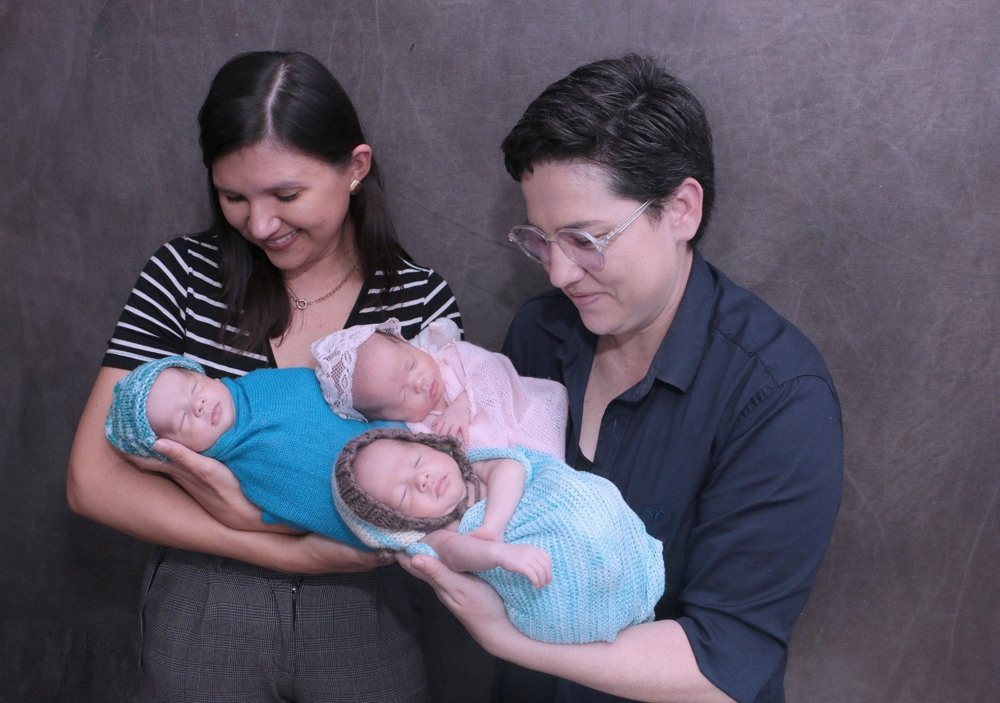

Toda mulher possui um império dentro de si. Encontre a chave para governá-lo.
Psicoterapia especializada no fortalecimento da autonomia feminina, acolhimento da maternidade real e saúde emocional. Um espaço nobre de escuta empática, clareza e coragem para você reassumir a direção da sua própria história.
“Nossa história influencia quem somos, mas não precisa determinar quem seremos. Entre as raízes que nos formaram e as escolhas que fazemos hoje existe um espaço de transformação.”
A psicoterapia sistêmica permite que você compreenda seus emaranhados familiares, cure feridas do passado e tome posse da sua autonomia com respeito à sua história.
Para quem é a psicoterapia com a Edna?
Processos clínicos voltados a mulheres e mães que buscam clareza, equilíbrio emocional e soberania sobre suas escolhas.
Sente que poderia ir muito mais longe?
Você reconhece seu potencial, mas percebe que hesita na hora de ocupar plenamente seu espaço profissional e pessoal.
Percebe que padrões invisíveis travam você?
Conflitos repetitivos, lealdades familiares inconscientes ou medo de decepcionar os outros bloqueiam suas decisões.
Vive sobrecarregada pelas demandas da maternidade e rotina?
Uma sobrecarga contínua por cuidar de todos ao redor, tentando ser a mãe e profissional perfeita, esquecendo de si mesma.
Deseja ocupar seu lugar com firmeza e afeto?
Construir relações maduras, sem dependência emocional, liderando a sua vida com equilíbrio genuíno entre força e acolhimento.
Os 3 Pilares da Autonomia Feminina
O método estruturado para transformar a compreensão da sua história em poder pessoal consciente.
Clareza
Compreender os padrões familiares invisíveis, lealdades e dinâmicas relacionais que moldaram sua trajetória até aqui, discernindo o que é seu e o que foi herdado.
Força
Desenvolver autonomia emocional, capacidade de sustentar escolhas autênticas e segurança interna para lidar com conflitos e limites sem se anular.
Posicionamento
Assumir a própria vida, identidade e lugar no mundo com postura firme e afetuosa, tornando-se verdadeiramente soberana da sua própria história.

Sou Edna Grahl, psicóloga com olhar sistêmico para mulheres e mães.
Sou psicóloga com registro profissional CRP 07/32844, com especialização sistêmica e dedicação exclusiva ao cuidado emocional de mulheres e mães.
Como mãe de trigêmeos, compreendo na pele os desafios da maternidade real, a sobrecarga de equilibrar tantos papéis e a solidão que muitas mulheres sentem ao tentar dar conta de tudo sem perder a própria identidade.
Meu trabalho terapêutico oferece um espaço seguro, livre de julgamentos, onde você pode respirar, curar culpas e reencontrar a sua força essencial com leveza e firmeza.
Soberania & Liderança
Governar a própria história, tomar decisões com segurança e estabelecer limites saudáveis.
Acolhimento & Escuta
Ambiente seguro e empático para acolher a sua vulnerabilidade e maternidade real.
Atendimento Personalizado para Mulheres
Processos clínicos desenhados para acolher a sua singularidade, fortalecer a sua autonomia e cuidar da sua saúde emocional.
Autonomia Feminina & Autoestima
Para mulheres que se sentem presas a ciclos de dependência emocional, padrões de autoanulação ou que buscam resgatar a confiança e o amor-próprio.
- Estabelecimento de limites saudáveis e assertivos
- Rompimento de ciclos de anulação pessoal
- Construção de autoconfiança e segurança interna
Maternidade Real & Puerpério
Acolhimento especializado para mães que enfrentam a sobrecarga da maternidade, culpas inconscientes, cansaço emocional e a redescoberta da mulher por trás do papel de mãe.
- Elaboração da culpa e das cobranças maternas
- Suporte emocional no puerpério e pós-parto
- Conciliação saudável entre maternidade, trabalho e autocuidado
Ansiedade & Sobrecarga Emocional
Apoio terapêutico para lidar com a aceleração da mente, a autocobrança excessiva, sintomas ansiosos e o esgotamento físico e mental da mulher contemporânea.
- Estratégias conscientes de regulação emocional
- Prevenção do estresse crônico e burnout
- Resgate do ritmo natural e da serenidade interna
Transições de Vida & Novos Ciclos
Acompanhamento ético e acolhedor em fases de mudança: térmicos de ciclos relacionais, lutos, novos projetos profissionais ou reinvenção pessoal.
- Elaboração de encerramentos e novas escolhas
- Clareza sobre novos rumos e valores essenciais
- Reencontro com o propósito essencial da mulher
Relatos de Transformação
Vozes de mulheres que encontraram na psicoterapia o espaço seguro para governar a própria vida.
Presencial ou Online
Escolha a modalidade que melhor se adapta à sua rotina com o mesmo acolhimento, confidencialidade e rigor ético.
Atendimento Presencial
Consultório privativo, silencioso e acolhedor na área central de Passo Fundo.
- Endereço: Rua Capitão Eleutério, 610 - Sala 106 - Centro
- Ambiente discreto, climatizado e confortável
- Atendimento individual e personalizado para mulheres
Atendimento Online
A mesma eficácia clínica com a flexibilidade e o conforto do seu próprio ambiente seguro.
- Videoconferência em plataforma segura e criptografada
- Sem necessidade de deslocamento na sua rotina
- Atendimento a mulheres em qualquer estado do Brasil ou no exterior
Venha tomar um café em Passo Fundo
O consultório foi estruturado para ser um refúgio acolhedor, tranquilo e seguro no centro da cidade.
Localização
Rua Capitão Eleutério, 610 - Sala 106 - Centro
Passo Fundo - RS, CEP 99010-080
WhatsApp Direto
+55 (54) 9951-8237
Atendimentos
Segunda a Sexta-feira com agendamento prévio
Perguntas Frequentes
Informações sobre o funcionamento das consultas, recibos para reembolso e agendamento.
A primeira sessão é um momento de escuta inicial e reconhecimento mútuo. Você terá total liberdade para compartilhar o que a trouxe à terapia, suas dores e objetivos. Juntas, alinhamos a proposta terapêutica e a frequência dos encontros.
Os atendimentos são particulares para garantir atenção plena e dedicação exclusiva a cada mulher. Forneço recibo profissional formal (com CRP 07/32844 ativo) que pode ser utilizado para solicitação de reembolso junto ao seu plano de saúde e para dedução em declaração de Imposto de Renda.
As sessões têm duração média de 50 minutos. A frequência recomendada no início do acompanhamento é semanal, permitindo a continuidade do processo e o aprofundamento das transformações.
O atendimento online é realizado por videoconferência em plataforma segura. Possui o mesmo rigor ético, acolhimento e eficácia do presencial. É necessário apenas estar em um ambiente com privacidade e boa conexão de internet.
Você pode enviar uma mensagem diretamente no WhatsApp (54) 9951-8237 clicando nos botões desta página. Responderei com as opções de horários disponíveis.
A sua história merece ser assumida com respeito e coragem.
Reserve um tempo para você. Inicie hoje o seu caminho de autoconhecimento, fortalecimento emocional e autonomia.
Falar com a Edna no WhatsApp